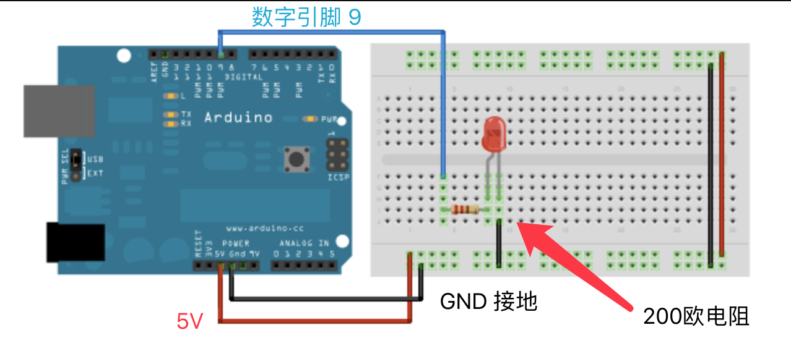

Arduino 实例01.Basic Fade
/*
Fade
This example shows how to fade an LED on pin 9 using the analogWrite()
function.
The analogWrite() function uses PWM, so if you want to change the pin you're
using, be sure to use another PWM capable pin. On most Arduino, the PWM pins
are identified with a "~" sign, like ~3, ~5, ~6, ~9, ~10 and ~11.
This example code is in the public domain.
http://www.arduino.cc/en/Tutorial/Fade
*/
int led = 9; // the PWM pin the LED is attached to
int brightness = 0; // how bright the LED is
int fadeAmount = 5; // how many points to fade the LED by
// the setup routine runs once when you press reset:
void setup() {
// declare pin 9 to be an output:
pinMode(led, OUTPUT);
}
// the loop routine runs over and over again forever:
void loop() {
// set the brightness of pin 9:
analogWrite(led, brightness);
// change the brightness for next time through the loop:
brightness = brightness + fadeAmount;
// reverse the direction of the fading at the ends of the fade:
if (brightness <= 0 || brightness >= 255) {
fadeAmount = -fadeAmount;
}
// wait for 30 milliseconds to see the dimming effect
delay(30);
}

analogWrite
描述
analogWrite()实现对引脚设置PWM的要求。可以被用来控制LED等，电机转动，舵机等。使用此函数后，引脚会产生稳定的方波，直到下一次对引脚做其他操作。大多数引脚的PWM频率大约为490Hz。在Uno以及相似的板子上，pin5和pin6有大约980Hz的频率。Leonardo板子的pin3和pin11也有980Hz的频率。
在大多数的Arduino板子上（用ATmega168或者ATmega328的板子），在引脚3,5,6,9,10和11有PWM功能；在Arduino Mega板子上，在2~13和44~46引脚有PWM功能。使用ATmega8的老板子只在9，10和11引脚支持analogWrite（）。
Arduino Due板子在2到13引脚和DAC0，DAC1引脚支持analogWrite（）。但是ADC0和DAC1是采用D/A转换的方式输出，它们确实输出的是模拟量而不是由PWM调制输出的。
另外，使用analogWrite（）不需要再用pinMode（）设置引脚为输出。
语法
analogWrite(pin, value)
参数
pin：将要写入的引脚。数据类型为：int
value：占空比，在0~255之间。（0时候为关，即LOW；255为开，即HIGH）
返回值
没有东西返回